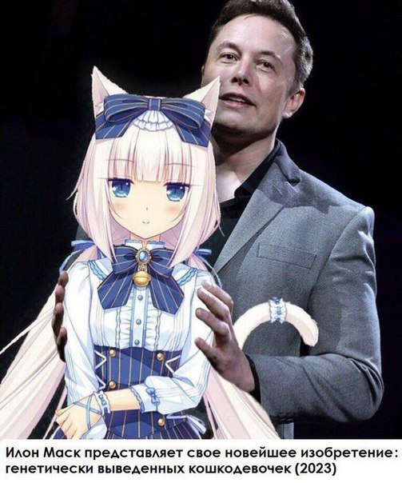

My name is Mario Cabrera
I'm a Software QA Engineer currently pursuing my masters degree at
the University of West Georgia. I always strive to push the
boundaries of my own capability, and am always looking for new
opportunities to learn and grow.
Please take a moment to browse my page, and feel free to reach out
to me regarding any employment or collaborative opportunities.
